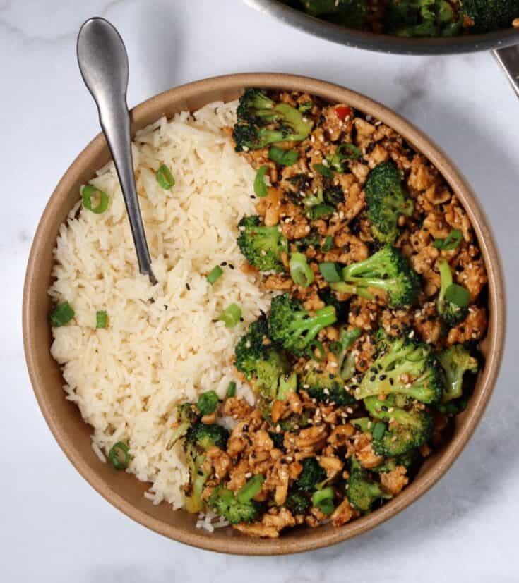

Honey Sriracha Protein Bowl

Description
My wife found this recipe on Pinterest and it has very quickly become
a staple in the Jones Family Household. My son (who does not like spicy
food) likes it. Plus, it's spice is totally customizeable depending on
how much Sriracha you add into it. The original recipe calls for broccolli
and, while we love broccoli, we have found that zucchini is the vegetable
that goes best in this dish. It rides the line between the
honey sweet and the spicy sriracha in a perfect way.
I haven't found a better flavor since.
Ingredients
- 1 Tbsp olive oil (divided)
- 1 lbs. ground chicken
- 1/4 C Sweet Chili Sauce
- 2 Tbsp Honey
- 1-3 Tbsp Sriracha(for your spice preference)
- 2 Tbsp Soy Sauce
- 1 Tbsp Toasted Sesame Oil
- 1 tsp Garlic Powder
- 1 tsp Ground Ginger
- Sesame Seeds and Green Onion for garnish
Steps
- Heat 1/2 Tbsp of olive oil in a large skillet over medium-high heat.
Add the broccoli and leave untouched for 1-2 minutes to develop some
browning on one side. Stir and continue cooking until the broccoli
is a dark green, about 3-4 minutes longer. Transfer to a plate and
set aside.
- Add the remaining olive oil to the skillet and brown both sides of
the ground chicken before mincing and fully cooking.
- While the chicken cooks, mix the remaining sauce ingredients together.
Add the sauce to the fully cooked chicken and cook until thick.
Be careful not to burn.
- Once the sauce is thick, add the broccoli back to the skillet and stir
everything together.
Garnish with sesame seeds and green onion before serving.
Bon Appetit!